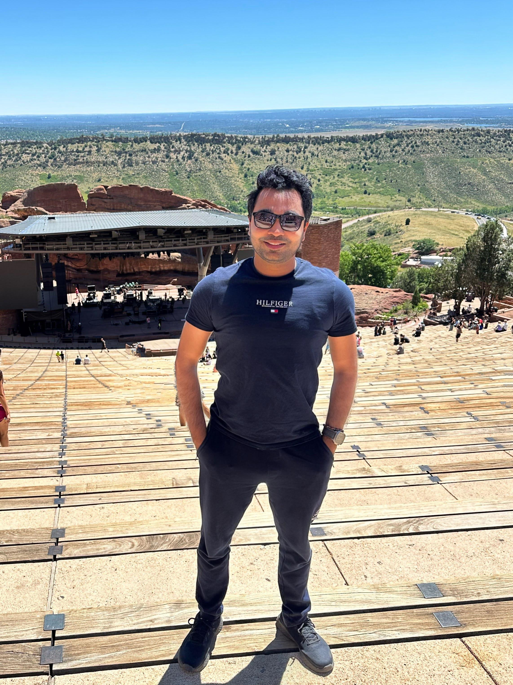

|
Himanshu Gupta
I am an Applied Scientist at Amazon (Stores Foundation AI team), where I work on mid-training, post-training optimization, synthetic data creation and benchmarking of large foundation models.
More recently, I have focused on RL-based post-training (GRPO/GSPO) with LLM-as-a-Judge reward design for product question answering, large-scale data curation and quality filtering for mid-training (including distilled code-quality classifiers), behavioral mid-training for customer personalization, and LLM-based product recommendation.
I have hands on experience with Megatron-LM, verl (SFT, DPO, GRPO), vLLM , SGLang and TRL .
Email /
Google Scholar /
X /
LinkedIn
|

|
|
Research
My research spans Instruction Tuning (
Sample Efficiency,
Long-Sequence Medical Tasks,
Event Detection
),
Efficient Pretraining,
Efficient LLMs-as-a-Judge,
Mathematical Benchmarking (
Adversarial Math Word Problems,
Multimodal Benchmarking,
Humanity's Last Exam and
Formal Math Discovery
),
Agentic Benchmarking (
Terminal-Bench and
Terminal-Bench-Science
) and
Synthetic Data Generation.
My recent work centers on foundation models with strong instruction following, guideline adherence, and high-precision reasoning — built through better mid-training corpora and RL-based post-training alignment.
|
|
Selected Papers
|
Translate-R1: Cost-Aware Translation Tool Use via Reinforcement Learning
Pratik Jayarao, Chaitanya Dwivedi, Himanshu Gupta, Neeraj Varshney, Adithya M Devraj, Meet Vadera, Priyanka Nigam, Bing Yin
Preprint
|
| |
Expert Upcycling: Shifting the Compute-Efficient Frontier of Mixture-of-Experts
Chaitanya Dwivedi, Bo Huang, Himanshu Gupta, Pratik Jayarao, Neeraj Varshney, Bing Yin
Preprint
|
| |
Code Mixologist: A Practitioner's Guide to Building Code-Mixed LLMs
Himanshu Gupta, Pratik Jayarao, Chaitanya Dwivedi, Neeraj Varshney
Preprint
|
| |
Terminal-Bench: Benchmarking Agents on Hard, Realistic Tasks in Command Line Interfaces
The Terminal-Bench Team (incl. Himanshu Gupta)
ICLR 2026
|
| |
Terminal-Bench-Science: Evaluating AI Agents on Research Workflows Across Scientific Domains
The Terminal-Bench-Science Team (incl. Himanshu Gupta)
Benchmark (2026)
|
| |
Formal Conjectures: An Open and Evolving Benchmark for Verified Discovery in Mathematics
The Formal Conjectures Authors (incl. Himanshu Gupta), Google DeepMind
Preprint
|
| |
Explicit Reasoning Makes Better Judges: A Systematic Study on Accuracy, Efficiency, and Robustness
Pratik Jayarao, Himanshu Gupta, Neeraj Varshney, Chaitanya Dwivedi
NeurIPS 2025 Workshop on Efficient Reasoning
|
| |
PolyMATH: A Challenging Multi-modal Mathematical Reasoning Benchmark
Himanshu Gupta, Shreyas Verma, Ujjwala Anantheswaran, Kevin Scaria, Mihir Parmar,
Swaroop Mishra, Chitta Baral
NeurIPS Foundations of Reasoning in Language Models Workshop 2025
|
| |
Krutrim LLM: Multilingual Foundational Model for over a Billion People
Aditya Kallappa....Arveti Manjunath, Himanshu Gupta... Chandra Khatri
Tech Report
|
| |
Humanity's Last Exam
Scale AI team, ....Chris Harjadi, Himanshu Gupta, Stephen Malina....
Nature 2025
|
| |
Cutting Through the Noise: Boosting LLM Performance on Math Word Problems
Ujjwala Anantheswaran, Himanshu Gupta, Kevin Scaria, Shreyas Verma, Chitta Baral,
Swaroop Mishra
Reasoning and Planning for LLMs @ ICLR 2025
|
| |
TarGEN: Targeted Data Generation with Large Language Models
Himanshu Gupta, Kevin Scaria, Ujjwala Anantheswaran, Shreyas Verma, Mihir Parmar,
Saurabh Arjun Sawant, Chitta Baral, Swaroop Mishra
COLM 2024
|
| |
EDM3: Event Detection as Multi-task Text Generation
Ujjwala Anantheswaran, Himanshu Gupta, Mihir Parmar, Kuntal Kumar Pal, Chitta Baral
*SEM NAACL 2024
|
| |
InstructABSA: Instruction Learning for Aspect Based Sentiment
Analysis
Kevin Scaria, Himanshu Gupta, Siddharth Goyal, Saurabh Arjun Sawant, Swaroop Mishra,
Chitta Baral
NAACL 2024
|
| |
“Len or index or count, anything but v1”: Predicting Variable Names in Decompilation
Output with Transfer Learning
Kuntal Kumar Pal, Ati Priya Bajaj, Pratyay Banerjee, Audrey Dutcher, Mutsumi Nakamura, Zion
Leonahenahe Basque, Himanshu Gupta, Saurabh Arjun Sawant, Ujjwala Anantheswaran, Yan
Shoshitaishvili, Adam Doupé, Chitta Baral, Ruoyu Wang
IEEE S&P 2023
|
| |
A Unified Evaluation Framework for Novelty Detection and Accommodation in NLP with an
Instantiation in Authorship Attribution
Neeraj Varshney, Himanshu Gupta, Eric Robertson, Bing Liu, Chitta Baral
ACL 2023
|
| |
"John is 50 years old, can his son be 65?" Evaluating NLP Models' Understanding of
Feasibility
Himanshu Gupta, Neeraj Varshney, Swaroop Mishra, Kuntal Kumar Pal, Saurabh Arjun
Sawant, Kevin Scaria, Siddharth Goyal, Chitta Baral
EACL 2023
|
| |
Context-NER : Contextual Phrase Generation at Scale
Himanshu Gupta, Shreyas Verma, Santosh Mashetty, Swaroop Mishra
NeurIPS ENLSP Workshop 2022
|
| |
|
Please check my
google scholar page for all the papers.
|
|
Patents
|
Automated question-answer generation system for documents
Himanshu Gupta, Raaed Ahmed Syed, Tarun Kumar, Tamanna Agrawal, Himanshu Sharad Bhatt
US Patent 12,333,246 B1 (2025)
|
| |
System and method for performing product analytics for machine learning platforms
Himanshu Gupta, Gourav Kumar Sharma, Krishnaprasad Narayanan, Rahul Ghosh
US Patent 12,229,788 B1 (2025)
|
| |
Transaction and ownership information document extraction
Tarun Kumar, Himanshu Gupta, Himanshu Sharad Bhatt, Rahul Ghosh, Nikhil K. Jain, Vinodh Kumar Rajagopalan Velayudham
US Patent Application 2023/0113578 A1
|
| |
|
Experience
- 12.2023 - present Applied Scientist at Amazon (Stores Foundation AI Team)
- 08.2023 - 11.2023 Founding Scientist Scientist at Krutrim
- 05.2023 - 07.2023 Internship at Amazon Alexa
- 01.2022 - 05.2023 Graduate Research Assistant at CogInt Labs, ASU with Dr. Chitta Baral
- 07.2019 - 12.2021 AI Researcher at American Express AI Labs. Supervised by Dr. Himanshu Shrad
Bhatt
- 01.2019 - 06.2019 Internship at American Express
- 01.2018 - 12.2018 Research Intern at Covenant University with Dr. Sanjay
Misra
- 01.2018 - 12.2018 Undergraduate Research Assistant at BITS Pilani with Dr. NL Bhanu Murthy
|
Speaking and Advisory Discussions
- September 10, 2026 Invited advisory discussion with OpenRefinery — Terminal-Bench-Science task selection, design, and submission and review guidance for research participants (Details).
- June 18, 2025 Panelist, Experts in the Loop, hosted by AI Circle and Appen — building safe, reliable, and multilingual AI (Screenshots, organizer recap, Appen post, host recap).
Selected Professional Invitations
- November 19, 2026 Invited guest, Simons Institute Industry Day, UC Berkeley, including the reception and dinner — upcoming (invitation).
- October 5, 2026 Invited expert panelist, CoLM Happy Hour Kickoff: The Missing Layer, hosted by AI Circle and EPAM (invitation).
- August 27, 2026 Invited guest, AI Collective's small, invitation-only discussion, The New Cybersecurity Frontier: What Comes Next (invitation).
- February 5, 2026 Invited guest with approved registration, Unusual Ventures Thought Leadership Dinner, San Francisco; included in the organizer's attendee-profile brochure (Screenshots, host recap).
|
|
Professional Service
Review confirmations for 34 completed reviews across ICLR, COLM, NeurIPS, ACL Rolling Review, and SDU at AAAI.
- 2027 Reviewer for ICLR (Screenshots).
- 2026 Reviewer for ICLR and NeurIPS, including Evaluations and Datasets and ethics review (ICLR screenshots, NeurIPS screenshots).
- 2025 Reviewer for ICLR and COLM (ICLR screenshots, COLM screenshots).
- 2024 Reviewer for ACL Rolling Review (February, April, June, August, October, December), including cycles associated with NAACL, ACL, and EMNLP 2024; and SDU at AAAI (ARR screenshots, SDU screenshots).
- 2023 Reviewer for the December ACL Rolling Review cycle (Screenshots).
Honors, Awards and Volunteer Opportunities
- 2022 - 2023 Received Masters Graduate fellowship for Spring, Summer and Fall 2022 at Arizona State University. Also received Engineering Graduate Fellowship award for academic performance in Masters Study. Project mentor and supervisor for 16 Students for CSE 576: Advanced topics in NLP. Responsible for Problem statement delivery, setting up research goals, clearing coding doubts for the project of the students. The Project was 50% of the entire coursework. Involved in writing $6 Million grant to IARPA for Authorship Privacy Research for CogInt Labs.
- 2019 Secured World Rank 2 among 6000+ teams in HackHarvard Global 2019 Hackathon on the industry based education track. Was invited to Harvard University to present the project.
- 2014 Secured a rank of 901 among 1.4 million students PAN India to receive KVPY fellowship.
|
|
|